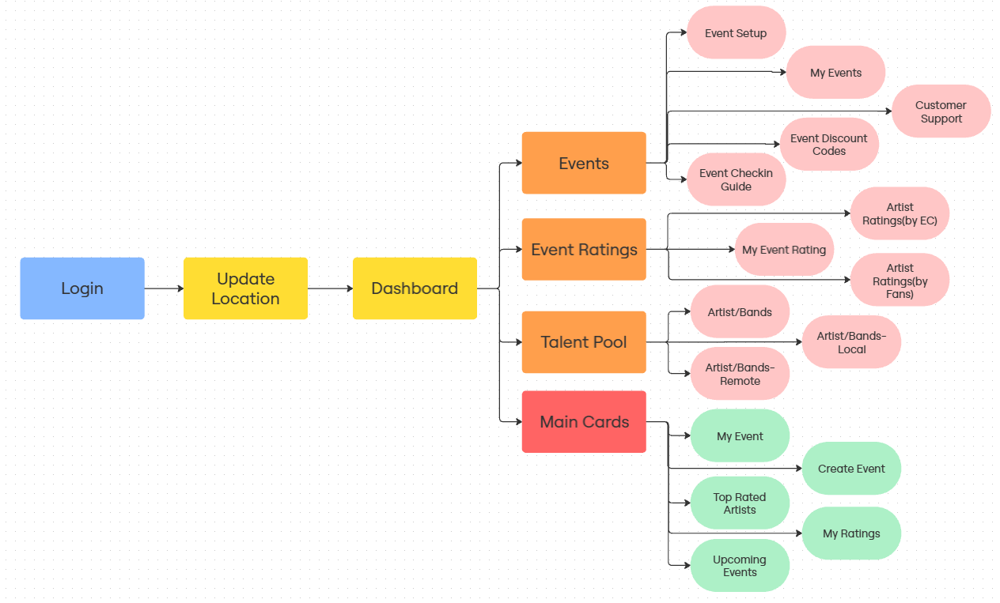

Redesigning the YouBloom Event Creator Dashboard
Executive Summary
The goal was to design a centralized dashboard for Event Managers to discover talent and organize gigs. Driven by the critical insight that 90% of user activity is setting up shows, I redesigned the experience to prioritize "Creation" above all else. The solution introduces Contextual Talent Discovery and mandatory onboarding gates to drastically reduce error rates.
The Challenge: 4 Critical Friction Points
Through stakeholder interviews and observing users on the legacy platform, I identified four specific failures in the user journey:
1. The Identity Crisis
Users were confused about whether they were in "Fan Mode" or "Creator Mode" due to a lack of visual distinction.
2. The "Ghost" Dashboard
Users saw a full dashboard with unclickable buttons because they hadn't set their location, with no error messaging explaining why.
3. Front-Loaded Payment Friction
Forcing users to connect a Stripe account as the very first step created a high barrier to entry, causing high drop-off rates.
4. The "Blank Box" Discovery
Adding artists relied entirely on "Recall"—typing the exact name into a search box with no way to browse artist details.
Discovery & Strategy: The "90% Rule"
Stakeholder Insight: The CEO established a clear hierarchy: The dashboard must prioritize "Create Event" (P0), followed by "Upcoming Events", then "My Events".
I restructured the Information Architecture (IA) to align with this goal. Instead of equal weight for all features, the navigation focuses on three distinct workflows:
- Talent Pool: For discovery (Browsing).
- Shows: For management (The "90%" task).
- Ratings: For feedback and improvement.
The Solution: Optimizing the Critical Path
To solve the friction points identified in research, I designed a new system flow that enforces data completeness before the user reaches the dashboard.
The New User Flow
Solution A: The Mandatory "Location Gate"
The Problem: Users were seeing a dashboard they couldn't use because they hadn't set a location, with no error messaging to guide them.
The Fix:I designed a Mandatory Onboarding Gateway. The main dashboard remains locked until the location is saved.
- Trigger: First-time Login.
- Action: Redirect to "Set Location" page.
- Result: Eliminates the downstream error entirely.
Solution B: The Design Pivot (Contextual Discovery)
The Initial Concept: I originally prototyped an "Artist Cart" where users would shop for artists before creating an event.
The Constraint: Stakeholder feedback highlighted a critical issue: an e-commerce model felt "transactional" and risked commodifying the artists, which clashed with YouBloom's community-first values.
The Final Solution: I pivoted to Contextual Discovery.
Instead of a cart, I integrated "Local" and "Remote" talent discovery triggers directly inside the "Lineup" wizard step. This allows creators to jump to the Talent Pool, verify artists, and add them to the show without the negative "shopping" connotation.

Solution C: The "Value-First" Wizard (Stripe Integration)
The Problem: Asking for Stripe connection at Step 1 caused users to quit before they started.
The Fix: I moved the payment integration to the end of the funnel.
- The Flow: Users act on their motivation first-setting the Venue, Date, and Artist.
- The Switch: Only in the final "Ticketing" step, after they have invested effort into the draft, are they asked to connect Stripe. This utilizes the "Sunk Cost" psychological principle to increase completion rates.

Solution D: The 6-Step Linear Wizard
The Problem: Creating an event involves complex logistics.
The Fix: To reduce cognitive load, I broke the complex event creation process into a linear wizard:
- Event Basics: Event Details & Category.
- Venue & Time: Venue & Time Selection
- The Lineup: Integrated Talent Discovery.
- Tickets: Ticketing of event.
- Policies: Policies of event.
- Publish: Stripe Integration & Review, Launch.
Solution E: The "Smart" Compliance Engine (DAC7 & OECD)
The Problem: The platform needed to scale globally, but a static "Account Details" form would fail strict tax laws (DAC7 in EU, OECD in UK/Norway). Asking a US user for a "VAT Number" creates confusion and legal risk.
The Fix: I architected a Dynamic Decision Tree for the Onboarding Profile.
- The Anchor Logic: The form adapts in real-time based on the "Country of Residence" selection.
- Contextual Validation: Triggers VIES API for EU, or Regex (e.g., "GB" + 9 digits) for UK users.
- Payout Safety: Designed "Payout Freeze" states to alert users before revenue is blocked.
Solution F: Financial Transparency
The Problem: Users struggled to distinguish between "Gross Revenue" and "Net Profit" and were confused by the technical term "Tickets Issued."
The Fix: I redesigned the Post-Event Analytics Dashboard to prioritize financial clarity.
- Semantic Correction: Renamed "Tickets Issued" to the user-friendly "Tickets Sold".
- Revenue Visualization: Designed a "Waterfall" breakdown showing Gross Sales → Fees → Net Payout.
- Inventory Visibility: Implemented visual charts to differentiate between Paid tickets (Revenue) and Free tickets (Comps).
Service Design: Closing the Loop
Recognizing that users might drop off during complex setups, I collaborated with the BA team to design engagement loops:
The "Nudge" Email
Triggered if a user registers but doesn't create a show in 24 hours.
"Create your first event in 5 minutes"
The "Save" Email
Triggered if a user abandons the wizard halfway.
"Your fans are waiting! Finish setting up..."
Phase 2: Beyond the Dashboard
Bonus: The "Growth" Homepage
The Problem: The marketing site focused on generic features, failing to communicate the platform's primary differentiator: Lower Fees.
The Fix: I designed a high-conversion homepage focused on value comparison.
- Interactive Savings Calculator: A widget allowing users to input ticket price/qty to see dynamic "You save $X" results.
- Trust Signals: Added a "Social Proof" strip and a "Feature Grid" aligning with new dashboard capabilities.